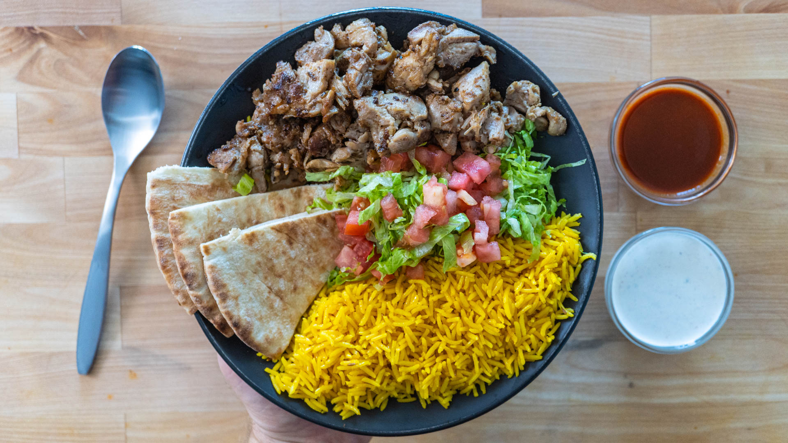

Halal Guys Chicken and Rice

Description
Probably the best street food in NYC is chicken and yellow rice. There’s just something special and addictive about a heaping mound of rice, marinated chicken that is slathered in white and red sauce.
Ingredients
Chicken
- 4 boneless skinless chicken thighs
- 5 g salt
- 5 whole cloves, crushed
- 1/2 tbsp cumin seeds, crushed
- Sprinkle of oregano
- 20 cranks black pepper
- 3 garlic cloves, crushed
- Juice from 1/4 of lemon
- 30 g mayo
Yellow Rice
- 15 g (tbsp) unsalted butter
- 1/8 onion, finely diced
- 1 tsp Cumin seeds
- 1 tsp of Turmeric
- 1 tsp of smoked paprika
- 1 bay leaf
- 200 g (about a cup) basmati rice
- 250 g (about a cup) chicken broth (or water)
- Salt to taste
Steps
Marinated Chicken
- Salt the chicken thighs and set them aside.
- Crush the cloves and cumin in a mortar and pestle. Add oregano, black pepper, and garlic cloves into the mortar with the spices and crush into a rough paste.
- In a large mixing bowl, combine the lemon juice, mayo, and spice mixture. Add the chicken thighs and thoroughly coat the exterior. Cover and place in the fridge for up to 24hrs or cook right away.
- When ready to cook, place a pan over medium-high heat. Once hot, sear the chicken thighs on both sides until internal temp reaches 165 F. Chop the chicken into pieces in the pan or let rest then slice.
Yellow Rice
- Melt butter in a pot over medium heat.
- Add onion, cumin, turmeric, smoked paprika, pepper, and bay leaf. Stir aromatics together until fragrant but not burnt, about 30 seconds.
- Add the rice to the pan with the aromatics and mix. Lightly toast the rice and stir for about 2 minutes.
- Add chicken broth, turn up the heat, and cover the pan to bring to a boil. Turn the heat to the lowest setting. Let rice steam covered for about 20 minutes.
- Uncover and taste the rice! Add salt as needed or a little more butter.